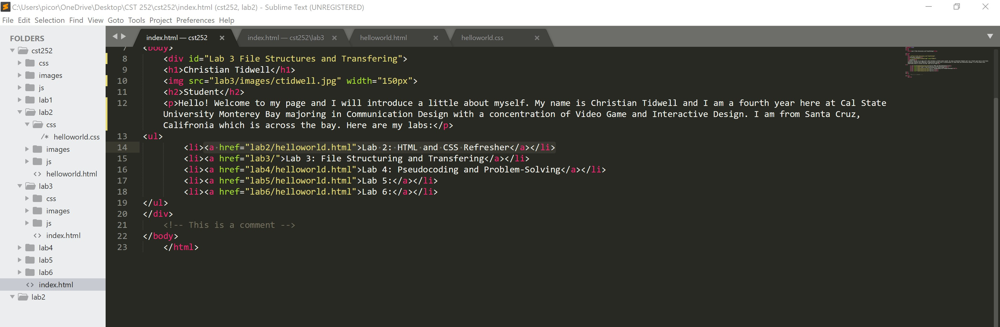

My partner and I created an extensive file structure. We added more folders for each lab, images, and javascript folders inside each lab folder. All lab folders have been linked with a bulleted list with an unordered list tag. We also added index.html files in the process.
The only challenge I faced was the index.html file for the lab3 folder I was supposed to edit as a landing page. Once I saved it, nothing changed as I reloaded the browser multiple times. I believed it was an error shown in the browser inspections, which was not the real cause. Anna pointed out that the index.html page was the landing page to edit for the introductions and links together. This means that the index.html file I edited for the lab3 folder was the real landing page. It turns out that it was in the correct directory folder this whole entire time. What a twist!
I have files structured, an edit and browser window of an index.html that presents the whole process.
Below is the file structure from my file explorer:
This is the source code to index.html landing page:
The web browser to the index.html landing page: